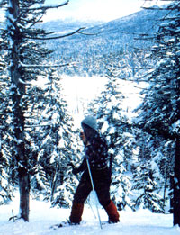
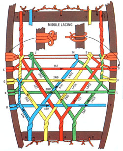
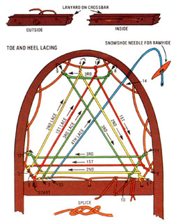
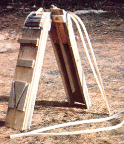

If you live in (or have ever visited) a region with heavy annual snowfalls, you know that trying to travel on foot through the winter woods can be downright exhausting ... and even dangerous. However, you don't need expensive skis or noisy, high-powered snowmobiles to traverse the white wilderness in comfort. Instead, strap on a pair of snowshoes-just as native Americans did hundreds of years ago-and start out . . . you'll often find yourself able to walk over deep powder that would sink cross-country skis or a powered vehicle!
Since its introduction to this continent by migrating tribes who crossed the Bering Strait with slabs of wood strapped on their feet, snowshoeing has grown from a convenient mode of transportation to an exhilarating cold-weather activity that almost anyone-regardless of his or her age and physical condition-can enjoy. What's more, you can slash the cost of this already inexpensive pastime by making your own snowshoes from mostly foraged materials!
Although it's admittedly not a simple job, snowshoe crafting is a worthwhile project for anyone who has basic carpentry skills and a yen to roam through silent, whitecarpeted forests without disturbing the delicate environment of the winter woods. You'll need to locate a stand of ash trees (to split into the bows for the shoe frames) ... some scrap wood (for building a jig form on which to shape those graceful curves) . . . and, if you like, materials to make your own rawhide (for lacing and binding the shoes). You might spend as long as 40 hours fashioning your first pair of hand-split snow walkerssince it'll take a lot of time to build the jig forms and learn the techniques for frame bending and lacing-but once you're ready to test-run your new footgear, I think you'll find the thrill of setting out into unexplored territory to be well worth theeffort!
Commercial snowshoes are available in a variety of shapes and sizes, from the lightweight oval "bearpaw" model (which, at an average size of 8" X 25", is ideal for competition and for backpacking in heavily forested areas) to the long-tailed Yukon shoes (which can measure up to 12" wide and 60" long, and are best for open country). Generally, the small, flat designs are best suited for use in dense, wet snow while the larger shapes-which commonly have their toes curved up several inches-can "float" over deep powder. A good allcondition snowshoe customarily measures 9" to 10" wide and 3 to 4 feet long, and has a short tail to provide traction.
I've been making my own "big feet" from hand-split ash for ten years now, and have pretty much settled on a 9" X 36" model that I call the Trail Blazer. It's light (so the wearer doesn't tire easily) . . . it's strong enough for bushwhacking through rough territory ... it provides enough flotation-or support-for backpacking through deep snow . .. and its turned-up toes allow the wearer to kick through heavy drifts. If you're new to the art of snowshoe-making, you'd do best to start with this basic pattern, but later-as you become familiar with the process you'll probably want to alter my design to suit your own needs and inclinations.
Begin making your homemade snowshoes by fashioning a pattern for the frames. I generally use newspaper for this purpose, although any large piece of paper will do. If you're using newspaper, fold a full sheet diagonally to form a triangle. The crease, when the paper is opened, will mark the centerline of the snowshoe . . . but you'll want to cut out the template while the sheet is folded so that the finished shoe will be perfectly symmetrical. Since the pattern is for the inside dimensions of the frame, it doesn't include the Trail Blazer's 5" tail.
Mark a point about three-eighths of the way down the snowshoe's length (on my 31" Trail Blazer, for example, that would be 11-1/2 to 12 inches), to indicate the location of the widest part of the frame. Then, working from that point, draw the outline of the shoe from toe to heel, as shown in the diagram. (You might want to use a flexible metal ruler, on edge, as a guide .. . in order to maintain a smooth curve.) At the toe-or leading edge-the snowshoe should be almost round . . . and it will taper to a point at the heel, where the tail will be formed. Try to cut the pattern so your shoe will have as much surface area as possible.
Finally, mark the line at which the toe will start curving up. I've.found that a ratio of 1:2 works well, so this particular shoe's three-inch turn-up will begin at a point six inches from the front.
Before you proceed any further, you'll need to construct the two jigs you'll use to bend the frames into shape. Assemble these devices carefully, since they'll directly affect the quality of every pair of snowshoes you make on them.
For each jig, you'll need to acquire two 40"-long 2 X 4's, four more that are 18" long, and another that measures between 30" and 40". First shape one end of each board to conform with the upturned toe of the shoe. (Try to make this arc as gentle as possible, since the toe area of the frame will be most liable to stress while being bent.) Now, cut a 1/2" jog in each plank, at the end of the curve (as shown in the diagram).
Next-stand the 2 X 4's on edge-side by side-with the 40" lengths on the outside, the 30-40" section in the center, and the 18" pieces in between. Glue and nail them together, using 10-penny galvanized nails . . . cover the level portion of the re sulting support frame with a sheet of 1G, plywood to fit flush in the 1/2" offset... scribe a lengthwise centerline ... and sand the planks' shaped ends to assure uniformly curved surface.
Once the basic form of the shaping jig is made, you'll need to cut wood block "stretchers"-as illustrated-to fit inside the toe, middle, and heel of the frame. Outline your paper pattern on the jig so that the centerlines match and the 6" mark on the pattern coincides with the line where the plywood meets the curve Starting at that line, position the series of three or four crosspieces (each should be about 3/4" thick) that will shape the turned-up toe of the shoe's frame. If you use hardwood for this purpose, drill the pieces first to avoid splitting them, then glue and nail the slats in place. Next, attach-in the same manner-a crosspiece to fit the widest part of the outline, and another at a point 6 inches or so behind that.
To make a cradle for the "V" formation at the heel end of the frame, start with an 8" or 9" rectangle and slice it into three pieces . . . which will look like two right triangles and one isosceles triangle except that you'll curve the cut sides slightly. At tach the three sections to the jig as shown in the photo and drawing, leaving a 3/4" path between them to allow the tail of the bow to pass through.
Two extra blocks are needed to keep the snowshoe frame in place on the jig: The first, 1 " X 10-1/2", is glued and nailed on top of the crosspiece at the widest point. It should overhang the bottom board, so the snowshoe frame can be wedged in under its ends. A smaller block, 1" X 4", is attached lengthwise (along the centerline) over the outermost slat at the toe end of the jig. Use two No. 10 X 3" wood screws to secure this piece . . . with one end projecting to hold down the toe of a steamed frame.
Your jig is now ready to be used to bend wooden strips into shape. If you measured and assembled the device with care, it should look like a work of art . . .and last to make countless pairs of snowshoes!
When the jig form is ready and waiting, it's time to cut the wood that will become the frame of your snowshoes. To find out how long a piece you need, measure the perimeter of the outline made by the blocks on the jig, and you'll have the necessary length of the "bow". For the Trail Blazer model, you'll want 82" (including a little extra added at the tail end). Then, to be sure you have enough wood, plan to cut a bit more than that . . . I'd suggest starting with an 8-foot section of tree. (It might be easier, of course, to buy a board and rip out the lengths you need for your bow . . . but-as long as you have access to it-you'll find hand-split lumber to be far superior and more satisfying to work with.)
Just about any straight-grained hardwood can be used in this project, but most snowshoe manufacturers agree that second-growth white ash-or, in the opinion of a few others, white birch-is the best choice. Look for a straight, tall tree that's free of imperfections and has no branches lower than 10 to 12 feet above the ground. The trunk must be 6" to 8" in diameter, its bark should have a small diamond pattern, and-ideally-it should show 10 to 12 rings of annual growth per inch (this will indicate that the wood is dense and sturdy). Cut down your chosen specimen and saw off the 8-foot section you need. Tap a wedge into the center of what was the top end of the trunk, then work others all along the length of the split. When the log falls into halves, split each of those sections. You'll need two quarters for every pair of shoes you plan to make.
You can rip a rough bow from the quartered log, using a circular power saw and a rip guide (or split off the section by gradually and lightly tapping a froe down the log's length until it separates along the line you want). If necessary, remove any excess wood with a wide chisel and wedges, so that the cross section extends 1" in from the inner edge of the bark and measures about 1-1/8" in the other direction. Check the bow for slight blemishes, then cut it down to 82" in length . . . and save the leftover piece to produce crossbars for use on the snowshoe frame.
Next, shave the wood to the right dimensions: The thickness of the completed bow (measuring inward from the bark) should taper from 1/2" at the ends . . . to 3/4" in the areas that will form the sides of the finished shoe . . . and back to 1/2" at the middle of the bow (which will become the snowshoe's foe). Be sure that the sides adjacent to the bark-covered edge (which, once shaped, should be 3/4" wide) are at right angles to it . . . and leave the bark on through the steaming process to come. (When the finished bow is placed on the jig, the bark side will run around the outer border of the shoe.) Mark the center of the bow with a pencil, and you'll be ready to form the hand-split beauty into a recognizable snowshoe shape.
First, put together a simple steaming box from two 8-foot 1 X 6's. Rip a 2" strip from each one, and glue and nail the four pieces together, using butt joints, to form a long, rectangular box measuring about 2" X 2"inside. Then cut two blocks to cover the ends ... drill an opening for the spout of a teakettle in one and a couple of small steam-escape holes in the other . . . and attach them to the box (hinge one so that the bow can be easily inserted and removed). Seal the seams carefully, since the sides of this container should be as steam-tight as possible. The bow must be exposed to the hot vapors in the box for a minimum of two hours ... otherwise it could snap when you try to bend it onto the jig.
When the wood has been thoroughly steamed, you'll want to work it quickly and smoothly onto the drying frame. Hook the center (which you marked earlier) under the protruding block at the curved end of the jig. Then carefully bend the bow around the stretchers on the toe section, below the ends of the upper block at the middle, and down into the V-shaped heel. There, secure the frame with small wooden wedges and hold the tail pieces together with a C-clamp. Tap the tail gently to one side or the other to straighten it, and lightly hammer any sections that seem to be out of line.
Leave the bow to dry in the jig for at least two weeks . . . after which it should be completely "cured".
Once a frame is totally dry, it's ready to be made into a sturdy snowshoe. The Trail Blazer, as I mentioned earlier, has a 5" tail for added traction and weight distribution in deep snow. Before you fasten the frame's protruding ends together permanently to form the tail, be sure to remove any bark that didn't peel off in the steam, and then varnish the inside surfaces of the to-be-joined section ... since you won't be able to do it later.
The traditional method of connecting the halves of a snowshoe's tail is to drill two pairs of holes in each side and lash the tips together with rawhide. A more modern technique uses copper nails and washers as rivets: Simply drive in nails that are just a bit longer than the width of the tail, then bend the end of each one back over its washer with several light blows of a ball-peen hammer.
I sometimes use a third system that employs four 1/4" dowels . . . glued and driven into diagonally drilled holes that form a pair of X's across the tail.
The final important element of a snowshoe's frame consists of a pair of crossbars, which will provide strength and help the bow hold its shape. To make these pieces, split the wood that's left over from the bow, and trim the two halves to the proper dimensions: One, to be mounted near the toe end, should be 1/2" X 1-1/8" X 8" .. . the other-which is placed about 16-1/2 inches farther down toward the heel-will measure 1/2" X 1 " X 6-1/2 ". (The crossbars will be perfectly positioned by finding the place where-if the frame is balanced on a thin board crossing at the midpoint between them-the tail of the shoe is a few ounces heavier than the toe . . . to balance the forward weight of your foot and keep the "prow" of the footwear slightly higher in snowdrifts.)
Measure 3/16 inch in from each end of each crosspiece, and shape the tips into projecting tenons. Next, mark the correct positions of the bars on the inside of the frame, and chisel out matching mortises at those spots. Finally, spread the bow and fit the crossbars in place.
All that's left to do on the frame, at this point, is to bore holes for the lacing and thoroughly varnish the whole assembly to protect it from the elements. Using a 5/32" bit, drill three holes along the front crossbar and two in the rear one (as shown in the lacing diagrams). The holes around the toe and heel sections should be made in pairs (with 5/S inch between the members of each pair and 2 to 2-1/2 inches between the pairs) and-at least around the toe of the shoe-countersunk to protect the lacing thongs from abrasion.
Finish the frame by sanding off all rough spots or saw cuts and rounding the edges. Then cover it with a good exterior varnish, taking care to seal the mortises and the holes. If you plan to lace your snowshoes with rawhide, one coat will be sufficient at this stage .. . but the frame should be varnished again (twice) after the rawhide is strung and has a chance to dry. (If the snowshoe will be laced with neoprene, on the other hand, two coats of varnish, applied before it's laced, should do the job.)
What a beautiful finished frame! It's readyat last-to be "stitched" up. Traditionally, snowshoes were laced with rawhide, but the newer models often boast neoprene (or even nylon) webbing.
Actually, a case can be made for either material: Rawhide generally outlasts any other kind of lacing ... as long as it's properly cared for. It's also the least expensive material, provided you can make it yourself. (The process isn't very difficult . . . if you have access to a cowhide and a public library, check out a book on the subject and give it a try!) However, the crude leather stretches when it gets soaked, and a hidelaced snowshoe can sag badly under wet conditions.
Neoprene, on the other hand, is a synthetic rubber with high resistance to snow and ice. Therefore, it'll stay taut and require no waterproofing maintenance.
Still, rawhide is the traditional webbing used by native American snowshoers. If you choose to work with it, cut long strips . . . soak them well . . . lace the frame while the hide is still wet, so it can tighten as it dries . . . and splice them-following the method illustrated in the drawings-as close to the frame as possible.
Before you begin, though, study the lacing diagrams thoroughly. With rawhide thongs, it might be helpful to use a snowneedle, which is simply a narrow, 2"-long piece of wood with a hole in the center. Although it may be hard to handle, pull the rawhide as tight as you can while you weave it (you'll want to snug neoprene in place, too, but it will tend to pull up automatically as the weaving progresses).
Starting with the shoe's toe section (from the upper crossbar to the tip), you'll first need 1-3/4 yards of 1/8"-wide lacing to make the lanyard that anchors the rest of the pattern. From the starting position indicated in the diagram, pass the cord through all the holes in the frame, as illustrated, then tie it off along the toe bar.
The actual webbing will consist of 4-3/4 yards of the same 1/8" cord. Beginning again at the point marked "start", follow the numbers to create a triangle formation. At No. 6, wrap the line around the first lace, then around the lanyard once to No. 7. From there, start another triangle... and continue this pattern until all the lacing is used up and the entire toe section is filled in by the closely woven mesh. The cord usually runs out near the center of the crossbar, so I wrap it around the lanyard over to the right and tie it off near the next hole.
You'll use the same procedure in the heel section of the shoe, except that there you'll need only 1-1/2 yards of cord for the lanyard and 3-1/2 yards for the lacing itself.
The middle section-that portion of the frame that's between the two wooden crossbars-requires 13 yards of 3/8"-wide material. You'll start by making a horizontal toe cord to anchor all the rest of the woven threads. (When you wear the snowshoes, the tip of your boot will rest between the upper crossbar and the toe cord, so be sure to leave room for bulky winter footgear . . . ideally, the open space should be 5" wide and about 4-1/2 "long.)
To begin, make a slit in one end of the line, then wrap it around the left side of the shoe frame, as detailed in the diagram. Pass the other end through the slit and pull it tight . . . then run the lace back and forth across the frame a couple of times to form a toe cord of at least four strands. Tie the grouping on the left side as shown, then take it over to the right and do the same. Now, pull it straight up to No. 1, loop it around the crossbar, wrap it back down around itself, and pull it diagonally to A (on the rear crosspiece). Angle the lace to the left corner of the toe cord, up to B, and over the crossbar .. . then wrap it back down to C (on the left side of the frame), where it should be tied as shown in the detail drawing for D. Next, pull the cord straight across to D and up to the crossbar at E. Wrap it back down to the toe cord (also E), then angle all the way down to F and back up to loop around the first lace at the toe cord, and thread it around itself down to G.
To continue the sequence, pull the lace over to H, thread it around the frame and up to the crossbar . . . wrap it around itself . . . and weave it down to I. Once again, it angles over and up to the crossbar at Jwhere it's wrapped and tied-then woven down to K on the left side of the frame and straight across to L. Circle the cord around the frame and angle it up to M, down to N, and up again to wrap around the second lace at G. It then twines around itself straight down to O, weaves over to P, and goes up to wrap around the third lace at H (just as it did on the opposite side).
Repeat this pattern until it concludes at the toe cord and the area is filled by tightly meshed webbing. Tie off the end of the strip and wrap the excess length around the toe cord to help protect that support against wear.
If you've made it this far in the process, you deserve a little exercise and fresh air! And when you've completed a pair of shoes, you'll be ready to investigate a new snowfall in your custom-made footgear . . . just as soon as you find a set of bindings to attach your boots to the snowshoes.
For short trips you can probably devise an adequate system with a 5-foot length (for each shoe) of neoprene, leather, or even lampwick. Basically, the strap goes over the toe of the boot, wraps securely around the toe cord, crosses over the instep, and ties around the wearer's heel.
You'll probably decide to try a sturdier commercial binding, however, for serious mountaineering and snowshoeing through rough territory. Bruce Beck (Dept. TMEN, P.O. Box 2223, Santa Barbara, California 93120) sells neoprene in various widths and lengths, as well as his own unconditionally guaranteed bindings. (You can have a copy of Bruce's catalog by sending him a first class postage stamp.)
You can also buy neoprene, rawhide, and bindings from Vermont Tubbs (Dept. TMEN, Forestdale, Vermont 05745). This company-the oldest in the business offers completed shoes and do-it-yourself! kits, too . . . all described in the firm's its catalog.
As for other necessities, you'll find the snowshoeing is one of the simplest winter sports to equip yourself for. Most important is a comfortable pair of boots. In cold areas, leather high-tops are ideal ... in warmer, wetter weather try rubber boots or canvas hiking shoes, worn with a couple of pairs of wool socks. For any expedition, dress warmly in layers (preferably with absorbent cotton undergarments and wool outerwear) ... because snowshoeing is a vigorous activity, and you'll often find that you need to shed some clothing before you've traveled very far
In g eneral, there's not much to be said about technique: If you can walk, you can snowshoe! The only trick is to avoid stepping on the side of one shoe with the other (and then pitching face-first into a snowbank). To prevent such mishaps, you'll have to walk with your legs slightly farther apart than usual ... so don't expect to move as rapidly as you do when wearing lightweight boots on a summer hike.
More how-to details-as well as information about the history of snowshoeing and traditional methods of shoemaking can be found in winter sports guidebooks available at most camping equipment stores or your local library. Two especially good references are Snowshoeing by Gene Prater (Mountaineers, 1974) and The Snowshoe Book by William Osgood and Leslie Hurley (Stephen Greene Press, 1971). You might also like to contact the U.S. Snowshoe Association
You can take pride in the fact that you've created a fine pair of snowshoes. Be sure to care for your handcrafted footgear lovingly, and it'll last through years of hard winter trekking. Whenever the finish on the frames begins to took worn, give them another coat of waterproof varnish ... and don't forget to "paint" the lacing as well, if it's made of rawhide. Store the shoes in a cool, dry place and -particularly if you live deep in the woods-hang them out of the reach of gnawing rodents.
Once you've taken your first hike on snowshoes, I'm willing to bet that you'll be hooked on this age-old mode of winter travel. Whether you use them for recreational hiking or for vital transportation in and out of a remote, snowbound homestead, you'll undoubtedly find your hand made shoes to be well worth the effort May the snowfalls be deep . . . and your snowshoes float high!
|
 |
 |
 |
|
 |
|
|